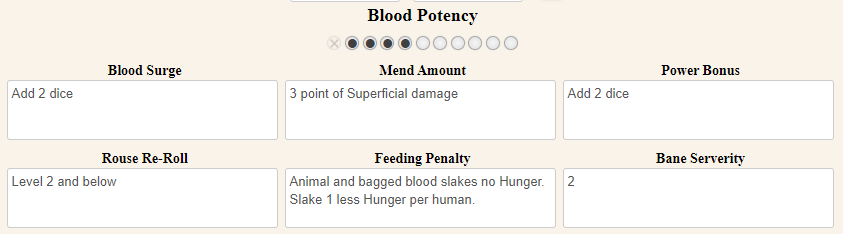

Susanna
| Salubri | |
| 4 | |
| Slouching towards Golconda | |
| Ancillae (10th Generation) | |
| 7 | |
| Unaffiliated | |
| , |

To-Do
- Ambition & Desire
Ambition and Desire are related, but not identical. Think of Ambition as a long-term goal: an aspiration (if you still breathed), a life’s dream (if you still dreamed, or had life). By contrast, Desires are more immediate: short-term wishes for revenge, satisfaction, or satisfaction through revenge.
Ambition
A character’s Ambition keeps them acting and moving both night by night and in the chronicle. It provides motivation for the player and story hooks for the Storyteller. An Ambition must be measurable in game terms (“My Ambition is to achieve Humanity 10”) or a concrete achievement in the world of the chronicle (“My Ambition is to liberate Chicago from the Camarilla”). An Ambition is not something vague like “end racism” or “achieve world peace,” but instead focuses on something specific, like “bring True Death to (insert notably racist elder from your chronicle here)” or “end the Gehenna War in the Ukraine.” If an Ambition is unlikely to happen or would end the chronicle if achieved, it can still provide rich story juice – it only needs to be theoretically achievable. If a character achieves their Ambition and the chronicle continues, the player should decide on a new Ambition, ideally one that has emerged during play or one that follows on the realization that their first Ambition left something undone or incomplete.
At the end of a session in which the character has actively worked toward their Ambition, they recover one point of Aggravated Willpower damage.
Desire
Desire reflects less than lifelong Ambition, but more than momentary wants. Each session, a character can select a Desire or keep their unfulfilled Desire from the previous session. Once per session, when the character definitively acts to further or accomplish their Desire, they may immediately recover one point of Superficial Willpower damage. Since Desires change so rapidly, you don’t need to write them on your character sheet. Just write your current Desire on an index card or Post-it Note where both you and the Storyteller can see and remember it. This mechanic intentionally provides players with an incentive for character action rather than
passively waiting for the plot or turtling up defensively. Thus, a good Desire connects in some way to the outside world. One rule of thumb: if it doesn’t involve someone or something named on the Relationship Map, it’s not worth considering as a Desire. By that metric, “I want to drive a cherry Maserati” or “I want to eat a brunette” fail as Desires, but “I want to drive Cytherea’s cherry Maserati” or “I want to eat Lord Harkness’ brunette” make excellent Desires. The Storyteller should judge whether Desires involving fellow player characters fall under the spirit of encouraging meaty interaction or of just lazily trying to sponge free Willpower.
- Convictions (1-3)
- Touchstones (1-3)
- Traits
- Skills
- Actually knowing the body of animals
- Very particular about blood temperature when feeding.
- Susanna uses secret ingredients in her meals that she may or may not have purchased items from Richart?
- Or only feeds on vegans?
- Still feeling very empathetic; uses her knowledge of anatomy to feed in
Session Notes
Character Notes
Susanna has a famulus, a dog named Sunshine.
History
Former chef before being embraced by Estelle.
Ambition
Desire
Convictions & Touchstones
- No harm to animals
- Sunshine the dog, is a bond famulus
Lore Notes
Humanity 7
Most human beings have Humanity scores of 7 or so; vampires at this level of Humanity can usually manage to pass for mortals. Vampires with Humanity 7 typically subscribe to normal social mores – sure, sin is wrong, but dodging taxes and speed limits are not sins. The vampire feels some connection to other beings, even human beings, though more than a little selfishness shines through – just like everyone else in the world, mortal or not. Rules for Humanity 7 vampires are much the same as those for other Kindred:
- You must make a Rouse Check to use Blush of Life.
- You cannot have sexual intercourse per se, but you can fake it by winning a Dexterity + Charisma test if you wish (Difficulty equals your partner’s Composure or Wits).
- Unless using Blush of Life, food and drink makes you vomit; make a Composure + Stamina test (Difficulty 3) to be able to get outside or to a bathroom first.
Predator Type: Osiris
You are a celebrity among mortals or else you run a cult, a church, or something similar. You feed from your fans or worshippers, who treat you as a deity. You always have access to easy blood, but followers breed problems with the authorities, organized religion, and indeed the Camarilla. In life, you might have been a DJ, a writer, a cultist, a preacher, or a LARP organizer.
Blood Potency 4
So close, and still so far, you occupy an unenviable position, both exercising lordship over the low and remaining a runt to the high. You require ever-more human gore to slake your Hunger, and you feel your Humanity slipping from your red-stained fingers.
When Mending Damage, you can remove three points of Superficial damage per Rouse Check.
Add two dice to your dice pools when using or resisting discipline powers.
When you feed from humans, slake 1 less Hunger per human.


Blush of Life
Unless intentionally brought to a semblance of life, the body of a vampire is functionally dead. Undeath signifies its presence in pale or ashy skin, cold flesh, and lack of breath (except to speak) or a heartbeat. By sending their Blood through the dead capillaries of their skin and into their shriveled heart, a vampire can appear completely human for a night, including but not limited to a heartbeat, body temperature, and breath. The vampire can even pass a cursory medical examination, though they still fail more intrusive screenings for minute tells such as the absence of intestinal flora.
Non thin-blooded vampires must use Blush of Life to use touch screens – such as those on smart phones – unaided, which don’t work without the skin moisture and conductivity of the living. Blush of Life generally allows a vampire to consume food and drink without vomiting for up to an hour. Without it, vampires must make an immediate Composure + Stamina test (Difficulty 3) to be able to get outside or to a bathroom in time.
Depending on their Humanity, vampires can fake or sometimes even enjoy sexual intercourse while Blush of Life is active (see p. 236.) At Humanity 9 or higher, vampires appear ill or “heroin chic” rather than dead; their heartbeat, pulse, and breath seem thready but detectable. They do not need to use Blush of Life for other than cosmetic purposes. Bringing on the Blush of Life requires a Rouse Check.
Blood Surge
Any vampire can call upon their Blood to temporarily augment their Attributes, whether Physical, Social, or Mental. When the character wills a Blood Surge, the player can add a number of dice to a dice pool incorporating an Attribute. The number of dice a Blood Surge adds depends on the character’s Blood Potency; characters can only use Blood Surge once per roll. A Blood Surge requires a Rouse Check.
Blood Surge applies only to a single roll of the dice. (Dice added in a Blood Surge remain throughout
any Willpower re-rolls.) Characters cannot use a Blood Surge for Willpower or Humanity rolls, for rolls that apply to more than one scene, in One-Roll Combat (p. 296), or whenever else the Storyteller disallows them. Do not apply automatic wins (p. 120) or “Take Half” to rolls augmented
by a Blood Surge.
Vampiric Mending
Being dead, vampires do not heal naturally. Their unliving frames can still knit themselves together,
given enough effort.
Mending superficial health damage
Depending on their Blood Potency, a vampire can mend one or more points of Superficial Health damage with a single Rouse Check. Vampires can make one Rouse Check per turn to mend Superficial Health damage.
Mending aggravated health damage
To mend Aggravated Damage, a vampire must wait until the next nightfall and make three Rouse Checks, in addition to the regular Rouse Check made when rising.
This process removes one point of Aggravated damage as well as one Crippling Injury or similar
impairment. A vampire can only mend one point of Aggravated damage per night.
As with awakening, if these Rouse Checks raise the vampire’s Hunger above Hunger 5, they fall
into torpor rather than testing for hunger frenzy.
Advantages
Merits
- Fame (3)
- Satisfy the Hunger (4, see Golconda)
- Greet the Sun (5, see Golconda)
Flaws
- Known Blankbody (2)
- Compromised Haven (2)
- Enemies: Tremere (2)
Clan Bane
The Salubri are hunted: Kindred of other clans are especially... appreciative of Salubri vitae. When a non-Salubri partakes of the blood of a Cyclops, they often find it difficult to pull themselves away. Consuming enough to abate at least one Hunger level requires a Hunger Frenzy test (See Vampire: The Masquerade, p. 220) at a Difficulty 2 + the Salubri’s Bane Severity (difficulty 3 + the Salubri’s Bane Severity for Banu Haqim). If the test fails, they just keep consuming, to the point that they may have to be physically fought off. Additionally, the third eye that Saulot opened while on one of his many journeys passes down through the bloodline every time a Salubri Embraces. This third eye is not always recognizably human in origin, and rumors persist of vertical, serpentine pupils, or even wormlike eyespots. While this third eye can be physically covered, such as with a headscarf or hood, it is always present, and no supernatural power can obscure it. Any time a Salubri activates a Discipline power, the third eye weeps vitae, its intensity correlating to the level of the Discipline being used, from welling up to a torrential flow. The blood flow from the third eye triggers a Hunger Frenzy test from nearby vampires with Hunger 4 or more.
Clan Compulsion
Affective Empathy - When a Salubri suffers a Compulsion, the Kindred becomes overwhelmed with empathy for a personal problem that afflicts someone in the scene, seeking to further its resolution. The scale of the personal problem isn’t important; the Salubri understands that sometimes suffering is part of a cumulative situation and not an isolated stimulus. Any action not taken toward mitigating that personal tragedy incurs a two dice penalty. The Compulsion persists until the sufferer’s burden is eased or a more immediate crisis supersedes it, or the end of the scene
Disciplines
Vampires add dice equal to half their Blood Potency (rounded down) to their dice pools to use or resist Disciplines.
Auspex
Type: Mental
Masquerade threat: Low. Auspex never by itself manifests in a way visible to the naked eye or causes effects that can’t be rationalized, if only as dumb luck.
Blood Resonance: Phlegmatic. Artists (especially photographers) and visionaries, certain schizophrenics, users of psychoactive substances, detectives.
Sense the Unseen
The senses of the vampire become attuned to dimensions beyond the mundane, allowing them to sense presences otherwise hidden from the naked eye. This can be anything from another vampire using Obfuscate to someone using Auspex to spy upon the character to a ghost in the middle of the room. Dormant Blood Sorcery spells and rituals might also be found with this power, at the Storyteller’s discretion.
Cost: Free
Dice Pools: Wits + Auspex or Resolve + Auspex
System: Whenever there’s something supernatural hiding in plain sight, the Storyteller makes a hidden roll of Wits + Auspex against a Difficulty they choose. Against an entity actively trying to stay hidden, the Storyteller can call for a blind roll (“Lisa, roll seven dice for me”) as a contest against the target’s relevant pool. (For example, detecting a vampire using Obfuscate would be a roll of Wits + Auspex vs Wits + Obfuscate) If the vampire actively searches for a hidden supernatural entity, they roll Resolve + Auspex similarly.
Duration: Passive
Premonition
The vampire experiences flashes of insight. These may take the form of raised hackles, sudden inspiration or even vivid visions. While never too precise, these visions can nudge the vampire out of harm’s way or reveal a truth previously overlooked.
Cost: Free or one Rouse Check
Dice Pools: Resolve + Auspex
System: Whenever the Storyteller deems it appropriate, this power gives the character a sudden hint that aids them in some way: letting them find a clue they’ve missed or saving them from danger. Whether it gives the character a sudden vision of themselves walking into a trap, an inviting red glow over the second right turn during a chase, or the brief flash of a skeleton beneath the floorboards in the Prince’s office, this power always gives the Storyteller license to subtly speed up play or move the story onto a desired track. The suggested limit is one premonition per scene, even if more than one character has Premonition.
The user can also actively provoke a premonition by focusing on a subject, making a Rouse Check and rolling Resolve + Auspex. The number of successes rolled determines the level of insight on the subject, if any.
Duration: Passive
Scry the Soul
By focusing on a person, the vampire can perceive the state of that person’s psyche as a shifting aura of colors. Auras reveal little precise information, but do provide clues regarding many subjects, e.g., emotional state, Resonance, and supernatural traits. If looking for a specific condition, the vampire can cursorily scan the crowd to detect it. Such cursory scans provide no further information.
Cost: One Rouse Check
Dice Pools: Intelligence + Auspex vs Composure + Subterfuge
System: Make an Intelligence + Auspex vs Composure + Subterfuge roll. On a win, the Storyteller truthfully answers a number of questions equal to the margin of the roll about the target’s aura and psyche, including:
- The emotional state of the subject.
- The Resonance in the subject’s blood
- Whether the subject is a vampire, werewolf, ghoul or any other supernatural being
- Whether the subject is under the influence of Blood Sorcery or other magic
- Whether the subject has committed diablerie in the last year
- A critical win allows discovery of something unexpected, as determined by the Storyteller
If scanning a crowd, roll versus a Difficulty determined by the size of the crowd and external distractions, as well as the type of trait being sought. (Finding the vampire in the living room might only be a Difficulty 3, while finding the most nervous person at a crowded rave is most likely Difficulty 6 or higher.)
Duration: One turn, or Storyteller’s discretion
Share the Senses
By reaching out with their mind, the vampire can tap into the senses of another mortal or vampire, seeing, hearing, and feeling what they do. The user still retains their own perceptions and is still aware of their own surroundings, though the effect requires some getting used to. The user decides whether to tap into only one, some, or all of the target’s senses. When used on a stranger this power requires line of sight to initiate. However, it can be used over longer distances on someone who still has some of the user’s Blood in their body.
Cost: One Rouse Check
Dice Pools: Resolve + Auspex
System: Roll Resolve + Auspex at Difficulty 3. This Difficulty can go up depending on distraction, distance, and other factors, such as the amount of the user’s Blood that remains in the target. The target usually remains unaware of the intrusion, but Sense the Unseen can allow the passenger to be noticed. To get rid of an unwanted rider, the victim must beat the intruder at a Wits + Resolve vs Wits + Resolve roll. An Auspex user thrown out this way cannot make another Sharing attempt until the next night.
Duration: One scene
Dominate
Type: Mental
Masquerade Threat: Low. Barring someone Dominating an entire auditorium to jump off the cliffs of Dover, it remains one of the more subtle vampiric powers.
Blood Resonance: Phlegmatic. The blood of the submissive or the dominant, masters and slaves, captains of industry, power trippers, cult leaders and followers.
Cloud Memory
By uttering the phrase “Forget!” the user can make the Dominated victim forget the current moment as well as the last few minutes, enough to mask a superficial feeding or a chance meeting. No new memories are formed and if pressed the victim realizes they have a few minutes missing.
Cost: Free
Dice Pools: Charisma + Dominate vs Wits + Resolve
System: No roll is required against an unprepared mortal victim. Clouding the memory of a resisting victim or another vampire requires a Charisma + Dominate vs Wits + Resolve roll.
Duration: Indefinitely
Animalism
Type: Mental
Masquerade threat: Low to medium. While talking to animals
might seem eccentric, only the most violent applications of the Discipline elicit more than a few raised eyebrows.
Blood Resonance: Animal blood, preferably feral.
Bond Famulus
When Blood Bonding an animal, the vampire can make it a famulus, forming a mental link with it and facilitating the use of other Animalism powers. While this power alone does not allow two-way communication with the animal, it can follow simple verbal instructions such as “stay” and “come here." It attacks in defense of itself and its master but cannot otherwise be persuaded to fight something it would not normally attack.
Dice Pools: Charisma + Animal Ken
Cost: The animal must be fed the user’s Blood on three separate nights, each of which requires a Rouse Check by the user. The amount of Blood
needed to sustain the ghoul state of the animal after this is negligible. Players starting with this power have completed this process and can chose a famulus for free.
System: Without the use of Feral Whispers, below, giving commands to the animal requires a Charisma + Animal Ken roll (Difficulty 2); increase Difficulty for more complex orders. A vampire can only have one famulus, but can get a new one if the current one dies. A vampire can use Feral Whispers (Animalism 2) and Subsume the Spirit (Animalism 4) on
their famulus for free.
Duration: Only death releases a famulus once bound. As long as it receives vampire Blood on a regular basis, the famulus does not age.
Loresheet: Golconda
Most vampires claim it’s a mythical state of enlightenment, but some few claim to have reached the fabled state of Golconda or know of others who managed it. Supposedly discovered by an ancient vampire named Saulot, Golconda is a state of perfect equilibrium between Humanity and the Beast.
A vampire walking Golconda’s path can temper their Beast’s outrage, subdue their Hunger, and even stand in the daylight, or so it is said. The gifts accompanying Golconda’s achievement are great, and so many vampires make the pilgrimage. Few succeed on the journey. The route to reaching the state of Golconda has never been accurately recorded. Indeed, Saulot’s followers claim the journey is different for every vampire, dependent on their sins. What Golconda does to a vampire when they reach it is also disputed. Some claim it leads to a state of perfect serenity, while others say it makes a vampire into a cold-blooded shark of a predator, no longer susceptible to mindless rage, but just as hungry for blood. You may be a disciple of Golconda, a follower of Saulot’s words, or a Kindred who wishes to remove the misleading veil of Golconda from other vampires’ eyes. An elusive vampire named the Master of Ravens seeks to quash the myth of Golconda once and for all, and you may serve him in this task.
- Satisfy the Hunger: You do not need to feed as often as other vampires. Your Golconda focus is to suppress your constant Hunger, potentially at the expense of other Traits. Your temperance acts as an inspiration to many other vampires. Once per session, you may lower your Hunger by one (but not below one) without feeding.
- Greet the Sun: You know Golconda’s secrets. You may be incapable of walking the path forever, but for as long as you do, you can brave full daylight without suffering harm. However, the night after you walk in sunlight, you wake in a Hunger frenzy. You can do this once per story.